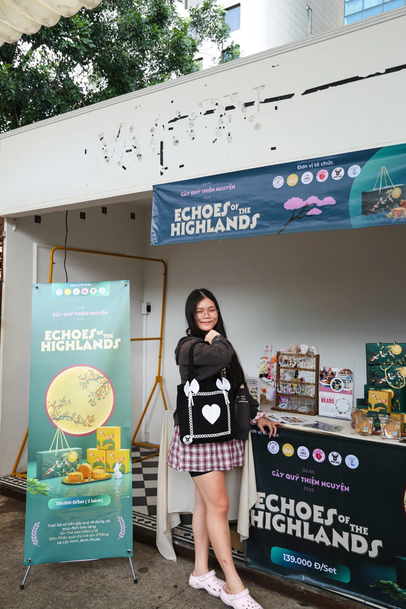

Studies on AI and the future of work
Student · Researcher · Community Builder
Ho Chi Minh CityClass of 2027IELTS 7.5
Hoang NgocDieu Anh
Exploring the intersection of economics, artificial intelligence, and human-centered impact.
I am a student at Phu Nhuan High School in Ho Chi Minh City. Through research on AI and the changing world of work, sustainable entrepreneurship, and community initiatives, I am learning how thoughtful ideas can become meaningful action.

Ideas testedin the real worldHCMC · VN
At a glanceAdmissions snapshot
Profile at a glance
Founded Wish Bag
President, Community of Innovators
National Dancesport Championship · 2023
01 / About
What connects the questions I ask?
Thinking across
disciplines.
I enjoy exploring an idea from more than one angle: through numbers, through people, and through creativity.
Economics helps me notice systems. Technology raises questions about how those systems change. Research gives me a method for investigating them, while leadership and creative practice test what I learn in the world beyond a paper.
Questions aboutpeople in changing systems
Researchevidence & inquiry
Businessdecisions & value
Leadershipcollaboration & care
Artsdiscipline & expression
01
Stay curious. Let questions lead.
02Work with evidence. Look closely before deciding.
03Create with purpose. Move ideas toward action.
02 / Research
How is AI changing the way people work?
Following the
human signal.
Two collaborative studies approach the future of work at different scales: how individual service workers adapt, and how managerial roles evolve across organizations.
03 / Applied learning
What happens when an idea meets the real world?
Making ideas
tangible.
Supporting experiences
Small roles.
Shared outcomes.
School and service experiences that strengthened coordination, teamwork, and practical responsibility.
04 / Milestones
Markers of continued learning
Evidence of
practice.
Awards are presented as milestones, not endpoints — each one records a subject explored, a discipline practiced, or a challenge accepted.
Academic honors
05 / Professional exposure
From information
to insight.
Gather
Social media performance and user-engagement metrics.
Examine
Patterns, engagement behavior, and market trends.
Communicate
Dashboards, data visualization, and analytical reports.
06 / Creative practice
Ideas need
movement, too.
Research teaches me to observe carefully. Dance teaches me to respond with precision, confidence, and rhythm.
Latin dance, drawing, and violin make room for a different kind of attention — one built through repetition, expression, and the courage to be seen.
Learning to translate an observation into line, shape, and composition.
Practicing patience, listening, and expression beyond words.
Visual journal
Moments from the work.
Photographs are grouped by the activity they document. Select a frame to open the full story.
No photographs are available in this category yet.
07 / A continuing conversation
Let’s keep
asking questions.
Thank you for exploring my work. I am glad to connect with people interested in research, thoughtful innovation, creative collaboration, or community initiatives.
iamdieuanh09@gmail.com